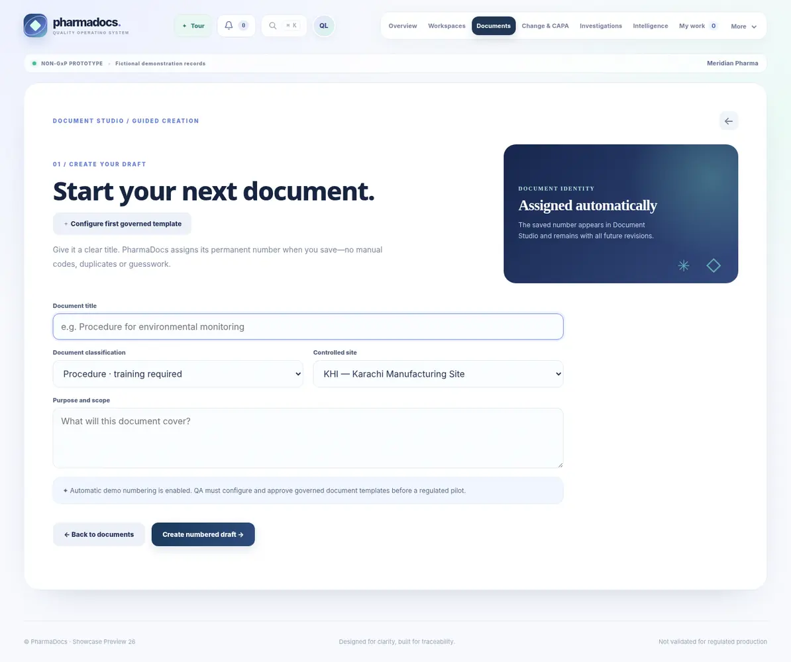
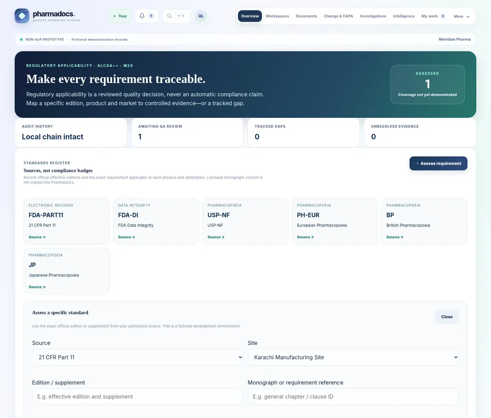

01
Controlled documents
Organize authoring, reviews, approval, issuance, revision and periodical review responsibilities.
An electronic quality management platform tailored around controlled documentation, training, investigations, quality events and management oversight.
 SANITIZED UI PREVIEW
SANITIZED UI PREVIEWDocuments and training are connected to deviations. Deviations can lead to CAPA, change control, supplier actions and audits. When these relationships live in separate systems, reviews and oversight become unnecessarily difficult.
PharmaDocs is designed to bring quality work into a more coherent, reviewable environment—with accountable actions and contextual traceability.
Modules are described from the user's perspective. Exact controls, automations, configurations and integrations are defined during a private implementation discussion.
Organize authoring, reviews, approval, issuance, revision and periodical review responsibilities.
Associate training assignments, acknowledgments and evidence with controlled requirements.
Give unexpected events a structured path for assessment, investigation and action.
Connect corrective and preventive action records to ownership and effectiveness follow-up.
Support structured exception investigations, evidence and decision context.
Plan, assess and review controlled changes across affected areas.
Organize observations, action ownership and follow-up across audit programs.
Maintain qualification, oversight and quality-related supplier records.
Specify traceability, electronic authorization and review expectations for the intended use.
Surface events, status and follow-up needs for appropriate management review.
Selected authentic interface screenshots reveal the design language and user experience. Sensitive records and proprietary implementation details remain outside the public showcase.
Bring quality activity into a more coherent operational view.
SELECTED PRODUCT CAPTUREMake controlled document work more organized and reviewable.

SELECTED PRODUCT CAPTUREConnect quality decisions to the surrounding responsibilities.

SELECTED PRODUCT CAPTUREConfigured to intended processes and regulatory expectations; formal validation is required before GxP production use.
Scope responsibilities, reviews and evidence against the organization's SOPs.
Keep dependent quality work connected where the use case requires it.
Give authorized teams a clearer route to completing their responsibilities.
Qualification, data integrity and computerized-system validation need to be established before regulated production use.
Our approach begins with how your team actually works. We identify the repetitive administrative steps, define the controls that matter, and discuss an implementation that fits—not a longer software checklist.
PharmaDocs is offered for tailored evaluation and implementation discussions. Public screenshots are historical interface previews, not proof of GxP validation, 21 CFR Part 11 compliance, or production qualification. Regulated deployments require documented risk assessment, CSV and appropriate controls.
Explore a guided product walkthrough or request on-demand configuration. We discuss deeper workflows and implementation details privately.